Changer les textes
Bienvenue dans ce court chapitre sur comment changer les textes !
On peut voir qu'on calque est une image Texte grâce à cet îcone : 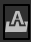
1 - Les bases
Cliquez sur l'outil de texte puis cliquez sur le texte que vous voulez éditer.
À partir de là, vous pouvez modifier le texte comme n'importe quel éditeur de texte.
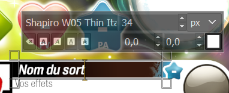
la première grande case indique la police que vous êtes en train d'utiliser, la deuxième indique la taille de la police, la troisième en quelle mesure.
Évitez d'y toucher, elles sont déjà à la bonne taille. les 5 cases en bas servent à modifier le texte (italique, souligné, etc...),
cela ne sers à rien d'y toucher non plus. la case tout à droite permet de changer la couleur du texte. Conseil N°5.
Normalement avec ces bases, vous pouvez éditer tous les textes du template, les informations présentes ci-dessous sont juste complémentaires,
pour ceux qui souhaite poursuive Gimp. Conseil N°6
2 - Pour aller plus loin
Les deux cases à gauche du carré pour modifier la couleur servent respectivements à modifier le padding vertical et horizontal (=l'espacement entre les lettres),
n'y touchez pas sans savoir ce que vous faites, et si vous n'êtes pas adepte du CTRL+Z/Y.
Maintenant, parlons des options de l'outils de texte :
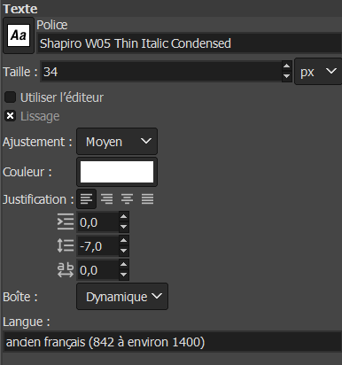
l'option "Langue" tout en bas parle d'elle-même (par contre, aucune idée de ce que cela fait concrètement...)
Si vous avez utilisé Word au moins une fois dans votre vie, vous devriez savoir ce qu'est que la justification
(peut-être pas le terme mais vous devez connaître les symboles) je ne m'y attarde donc pas.
...Je me rend compte en tapant que si vous rester avec votre souris sur une boite assez longtemps,
Gimp vous dira gentillement à quoi elle sert... Moins de texte a écrire pour moi en tout cas.
On va juste parler un tout petit peu de l'éditeur :
Si vous cliquez sur cette option une petite fenêtre devrait s'ouvrir
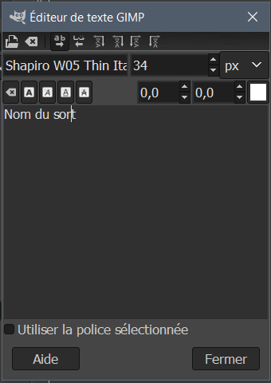
C'est généralement plus facile de modifier du texte ici.
3 - Ombrage et autres effets sur le texte
Je vous arrête là ! cet partie est la partie "finale" de ce tuto donc assurez-vous d'avoir terminé
l'aspect, texte et image de votre carte avant de revenir ici.
Pour ajouter des effets à un calque de texte, il faut d'abord convertir le calque de texte en image.
Pour cela, un clique droit sur votre calque que vous souhaitez convertir.
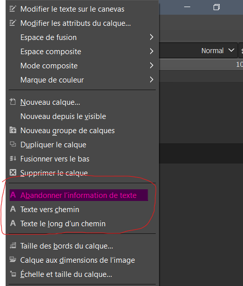
Et cliquez sur "Abandonner l'information de texte".
Attention ! : une fois fait, votre calque de texte sera désormais
considéré comme une image, vous ne pourrez donc plus faire de modification de texte dessus.
Imaginons je veux faire le contour de mon initiative :
je sélectionne le calque puis je vais dans Filtres\Ombre et lumière\Ombre portée.
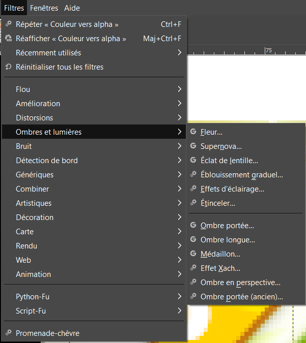
Une fenêtre devrait s'ouvrir :
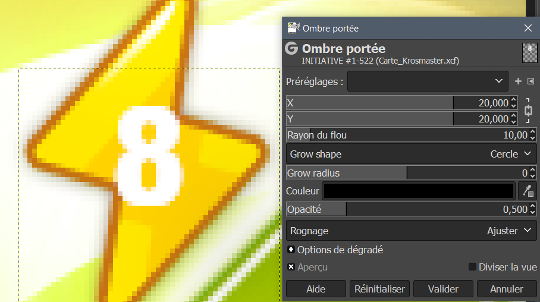
Vous allez tout d'abord mettre le X et le Y à 0 (double clique sur la valeur), vous allez mettre le Rayon de flou à 0
et le Grow radius à 2 (entre 1 et 3 selon les préférences) enfin double cliquer sur la barre de couleur et modifiez la notation HTLM
pour la couleur que vous voulez (Conseil N°5), moi j'ai pris la couleur foncé au bord du symbole initiative.
Enfin, mettez l'opacité à 1 (entre 0,5 et 1 selon les préférences)
Et voilà le résultat :
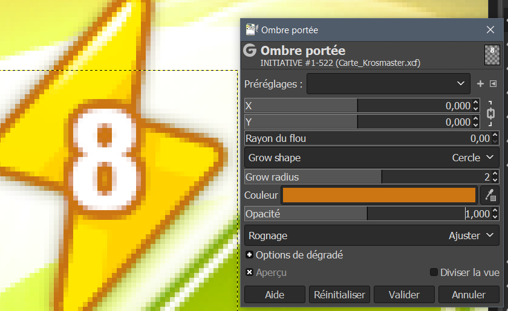
Ce n'est pas du tout obligatoire, mais si vous aimez votre carte, c'est quand même beaucoup plus jolie.
Vous devez être capable d'obtenir le même résultat avec tous les autres calques de textes.
Maintenant, le nom du Krosmaster ! c'est vrai qu'il est tout noir, c'est pas très beau !
mais on va changer ça... bon déjà "Abandonner l'information de texte" vous savez faire.
Ensuite, avec la pipette copiez la couleur dorée des lettres (si vous voulez un nom dorée) ce qui s'en rapporche le plus
sur la carte c'est l'emplacement du niveau du Krosmaster. Vous avez la couleur ? ok !
- Vous avez toujours deux couleurs sélectionnées, (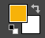) il faut que l'une d'entre elle soit la couleur choisie et l'autre du blanc (double clique pour modifier)
- Cliquez sur le calque du nom du Krosmaster.
- Cliquez sur l'outil de Sélection par couleur (
 ) et cliquer sur le nom du Krosmaster (dans l'image). Vous devriez voir les lettres entourées par une sélection
) et cliquer sur le nom du Krosmaster (dans l'image). Vous devriez voir les lettres entourées par une sélection - Cliquez sur l'outil de Dégradé (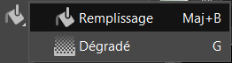)
- Dans les options de cet outil, sélectionnez le bon type de dégradé (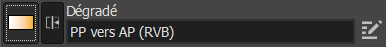)
- Mettez la Forme à "linéaire"
- Cliquez dans la zone délimitée par Gimp, tracez une ligne verticale
- Modifier la ligne, ajoutez des points jusqu'à avoir la couleur souhaitée

C'est un poil plus complexe, en effet, il faudra que vous fassiez vous même des tests mais on peut arriver à des trucs très beau.
Pour enlever la selection du texte aller dans "Selection" puis "Aucune".